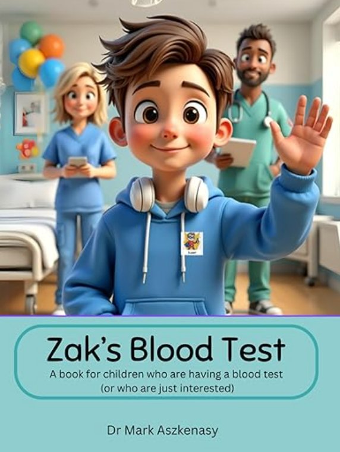
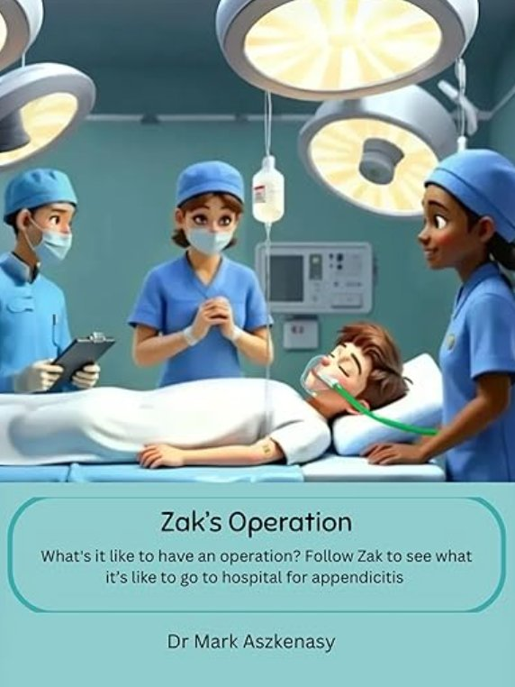
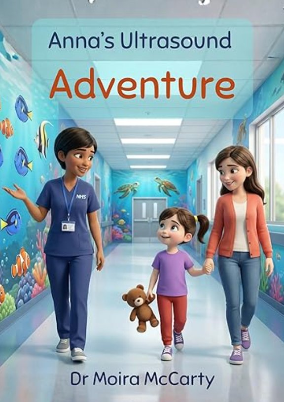
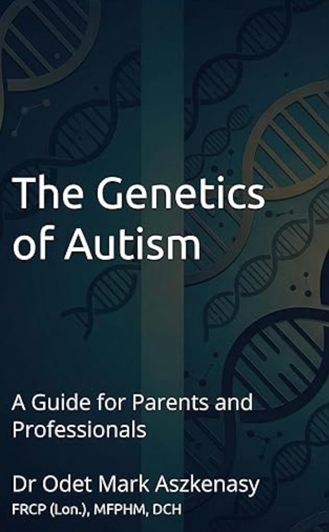
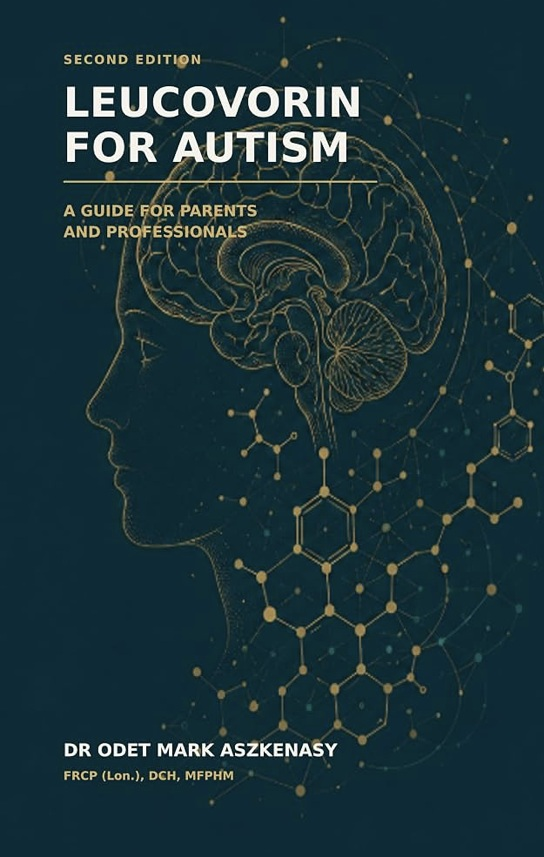

Zak’s Blood Test
Zak finds that a blood test is not as scary as he thought. Written by a paediatrician, with tips for parents and carers.
Doctors · Authors · Parents
Dr Odet Mark Aszkenasy and Dr Moira McCarty write short children’s stories for hospital visits, and plain-English guides on autism genetics and treatment questions. Both are very experienced doctors, and parents of autistic children. That informs what they write and how plainly they say it.
Stories that prepare children for procedures, plus guides for parents and professionals.

Zak finds that a blood test is not as scary as he thought. Written by a paediatrician, with tips for parents and carers.

Follow Zak through a hospital operation. Meet the people who look after him and see how he gets back to feeling well.

A doctor-written story that helps children understand a tummy ultrasound before the hospital visit. By Dr Moira McCarty.

Clear guidance on autism genetics, NHS whole-genome sequencing, interpreting results, and what testing can and cannot tell families.

Explains folate transport, cerebral folate deficiency, autoantibodies, and what remains uncertain. Not a treatment manual.